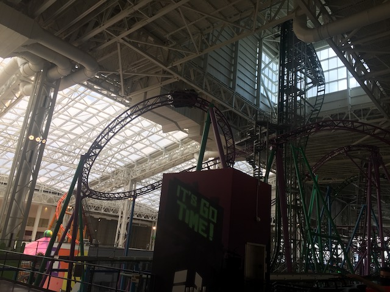
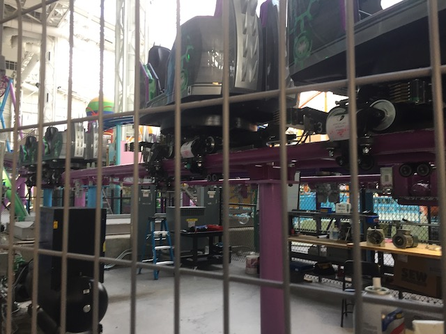

| |
Shredder Review

We're here at Nickelodeon Universe (American Dream), where we'll be reviewing Shredder. This is the parks spinning coaster. And, GOD DAMN!!! THIS IS A GOOD ONE!!! Honestly, I'd rank this my 5th favorite spinner out of the ones I've done (#1. Winjas, #2. Tornado @ Bakken #3. Gekion: Live Coaster #4. Spin Runway. #5. Shredder). Yeah, I know I still need to try a Mack XTREME Spinner, as those do look amazing. But I'll get around to there eventually. We get in the cars, pull down the lap bar, and we're off! We roll around a turn and begin climbing the lifthill. We get a GREAT view of TMNT Shellraiser as....the two rides are essentially intertwined with one another. We eventually reach the top, head through a turn and go down a curved drop. And....HOLY CRAP!!! WE ARE SPINNING SO F*CKING MUCH!!! ONE OF THE BEST SPINNERS OUT THERE!!! We go through a sort of banked hill, but you can't really tell what's happening. Just spinning, blurry views of the mall roof, Shellraiser, and your friends laughing. I know I normally am a lot more descriptive in my reviews, but it's f*cking HARD on spinning coasters. We're just turning, spinning, rising, and dropping all throughout the mall, snaking inbetween TMNT Shellraiser. Hit the midcourse brakes, and go through the Wild Mouse section. Except....it's really spinning, and it's A LOT more fun than you'd expect. We then head into a downward helix, which....just so much fun. There is apparently a lot of straight track afterwards. But I was too busy spinning and having fun to notice. Head through an upward helix and into another midcourse brake run. It's definately slowed down, but we're still having fun. Down another curved drop and through another couple small hills. Not quite as crazy, but still fun. And then we have....another mid course brake run? OK. If I had one critique of Shredder, it'd be all the Midcourse Brakes. This is the 3rd one on the ride, which....just feels too excessive. But at least the ride is still going. We then go down a small curved drop and into a small little hill. It's a lot slower and now spinning at average spinning coaster lengths, but I'm still happy. We head up through another upward helix, and FINALLY glide into the final brake run. For a second, you might think it's yet another midcourse brake run. So yeah. That's Shredder. BY FAR one of the better spinning coasters, and probably my favorite one that isn't a special unique coaster with amazing theming, special effects, or crazy unique elements. It's just a REALLY good spinning coaster. So yeah. I DEFINATELY recommend it if you're at Nickelodeon Universe (American Dream).
7/10
Location: Nickelodeon Universe (American Dream)
Opened: 2019
Built by: Gerstlauer
Last Ridden: June 15, 2021
Shredder Photos




Home
|